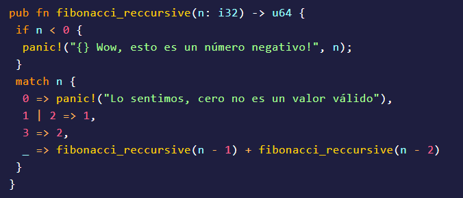

Rust es un lenguaje de programación desarrollado por los ingenieros de mozila. Podríamos catalogarlo como un lenguaje muy nuevo; Estamos hablando que la versión 1.0 estuvo disponible a principios del 2015; Actualmente estamos en la versión
1.32. Al igual que C , Java o C++, Rust es un lenguaje compilado. Rust está diseñado para desarrollar software de sistemas, donde la interacción con el usuario es practicamente nula; Excelente para aplicaciones con el modelo cliente-servidor
o para cosas más internas en nuestra empresa. Uno que otro demonio por allí. Algo interesante de Rust es que actualmente se están desarrollando dos sistemas operativos con dicho lenguaje. Rust tiene una sintaxis muy parecida a la de C
y C++.

Rust no cuenta con un recolector de basura. Esto quiere decir que somos nosotros los desarrolladores quienes debemos de estar al pendiente del uso de memoria; Pero no nos preocupemos, no estamos solos en esta tarea. Rust literalmente nos hace
escribir código de la manera correcta. Si algo está mal (Declarar una variable y no usarla, acceder a variables fuera de su contexto etc..) Rust nos lo indicará en al momento de compilar el proyecto.
Pocos son los lenguajes que nos permiten trabajar directamente con nuestro procesador y asignar tareas a realizar. Con Rust, podemos hacer esto de una forma segura. La creación de Threads, sincronización y acceso a datos concurrentes es posible
mediante el uso de librerías estándares (Rust viene con baterías incluidas).